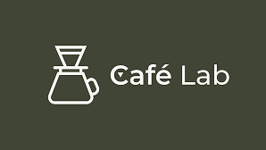

<mat-toolbar color="primary" class="toolbar">
  <div class="logo-container">
    
  </div>

  <span class="spacer"></span>

  <div class="language-switcher-container">
    <app-language-switcher></app-language-switcher>
  </div>
</mat-toolbar>
